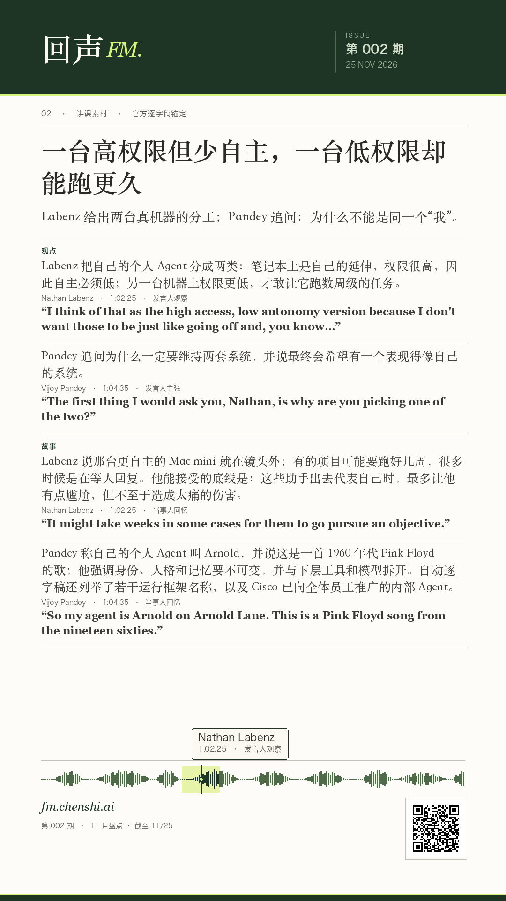

02第 002 期讲课素材11.11官方逐字稿锚定
一台高权限但少自主，一台低权限却能跑更久
Labenz 给出两台真机器的分工；Pandey 追问：为什么不能是同一个“我”。
观点
Labenz 把自己的个人 Agent 分成两类：笔记本上是自己的延伸，权限很高，因此自主必须低；另一台机器上权限更低，才敢让它跑数周级的任务。
“I think of that as the high access, low autonomy version because I don't want those to be just like going off and, you know, coming up with their own ideas given the access that they have. That's like a little too risky. But then on the other computer sitting right, you know, right off screen here is the Mac mini and that's where I have the more autonomous but lower access agents.”
主讲人个人取舍，不是对企业部署的规定。
Pandey 追问为什么一定要维持两套系统，并说最终会希望有一个表现得像自己的系统。
“The first thing I would ask you, Nathan, is why are you picking one of the two? … Eventually, we would all want that one system that behaves as me.”
这是他的方向，不是对 Labenz 做法的否证。不能据此认为共享身份就该共享权限。
故事
Labenz 说那台更自主的 Mac mini 就在镜头外；有的项目可能要跑好几周，很多时候是在等人回复。他能接受的底线是：这些助手出去代表自己时，最多让他有点尴尬，但不至于造成太痛的伤害。
“It might take weeks in some cases for them to go pursue an objective. Usually, lot of that is waiting for people to get back to us… I'm, you know, pretty confident that they're not gonna really, you know, harm me in a in a way that's gonna be too too painful. And most of them might embarrass me a little bit as they go kind of represent me as my assistant in the world.”
个人使用现场，不是评测报告。
Pandey 称自己的个人 Agent 叫 Arnold，并说这是一首 1960 年代 Pink Floyd 的歌；他强调身份、人格和记忆要不可变，并与下层工具和模型拆开。自动逐字稿还列举了若干运行框架名称，以及 Cisco 已向全体员工推广的内部 Agent。
“So my agent is Arnold on Arnold Lane. This is a Pink Floyd song from the nineteen sixties. And there's a reason I picked this name because Arnold is an identity, and Arnold is a personality, and Arnold represents me. And all of these things are immutable, and it needs to survive regardless of the technology stack that is below and is changing a lot.”
官方自动逐字稿如此记录（歌曲名通常写作 Arnold Layne）。稿中随后出现的 Hermes、Muse、Dots、Grok 等专有名词可能有识别误差，以原音频为准，此处不改写成“已核实的产品清单”。
新鲜事实
Pandey 描述他们观察过多代理系统后的判断：表面上已连接、也在朝一个目标工作，但语义上并未对齐，各自停在局部最优，既有评估也多是在测单个 Agent，而不是多 Agent。
“what we realized when we started looking at these multi agent systems is that they might appear connected and they might be working towards a goal, but semantically, they were not aligned at all. … So all of the evals that existed in the system were measuring these agents in an in an individual manner, not in a multi agent manner.”
这是 Cisco / Outshift 一侧的观察总结，不是对某公开基准的复现结果。
人物与产品
Nathan Labenz（主播，个人双机部署）与 Vijoy Pandey（Cisco Outshift SVP / GM）。对话后半段把个人 Agent 的身份、记忆与模型、运行框架拆开，是可直接拿来讲课的现场对照。
“The identity, the persona, the memory, all of that is immutable. It's been separated from the harness… which is separated from the actual model at the back end that I might be using.”
Pandey 描述的是自己的目标架构，不是已完成的行业标准。
节目溯源
The Cognitive Revolution · Vijoy Pandey
本期
第 002 期 · 25 NOV 2026 · 11 月盘点 · 截至 11/25
